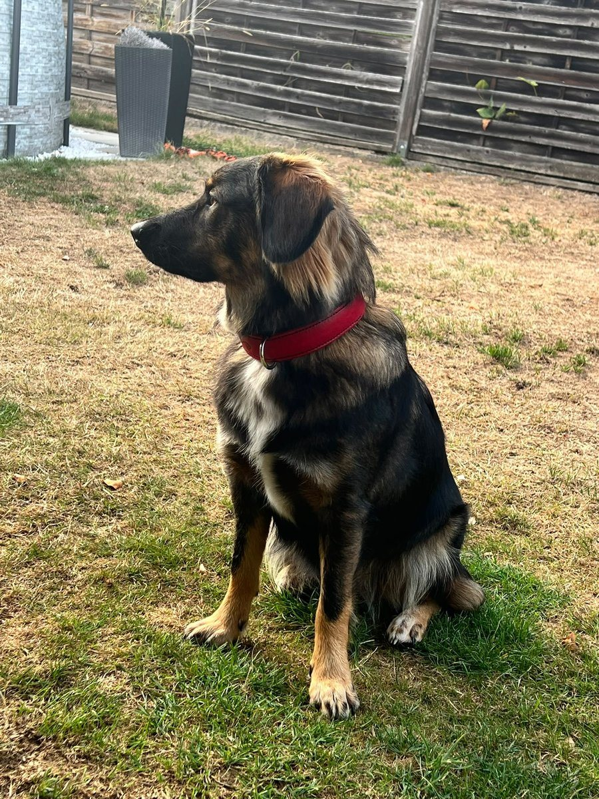
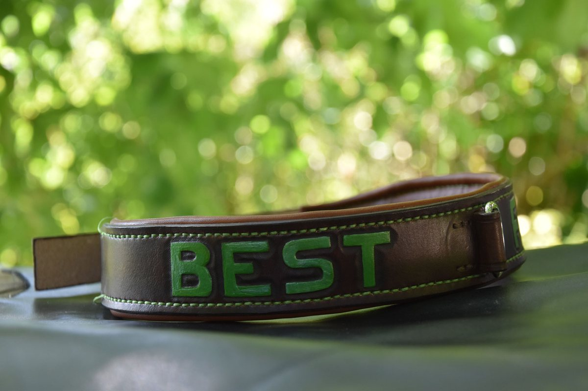
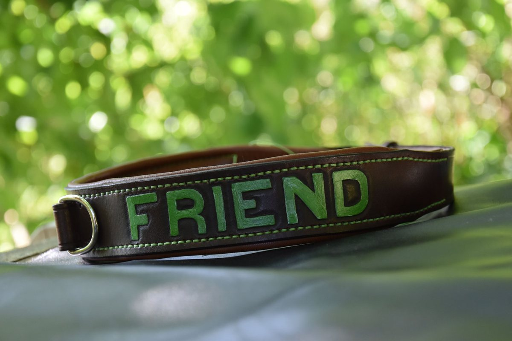
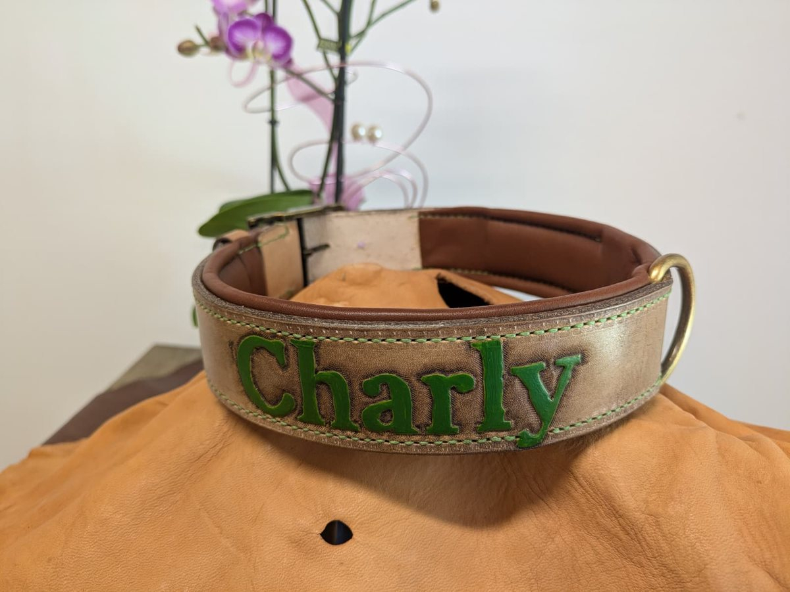
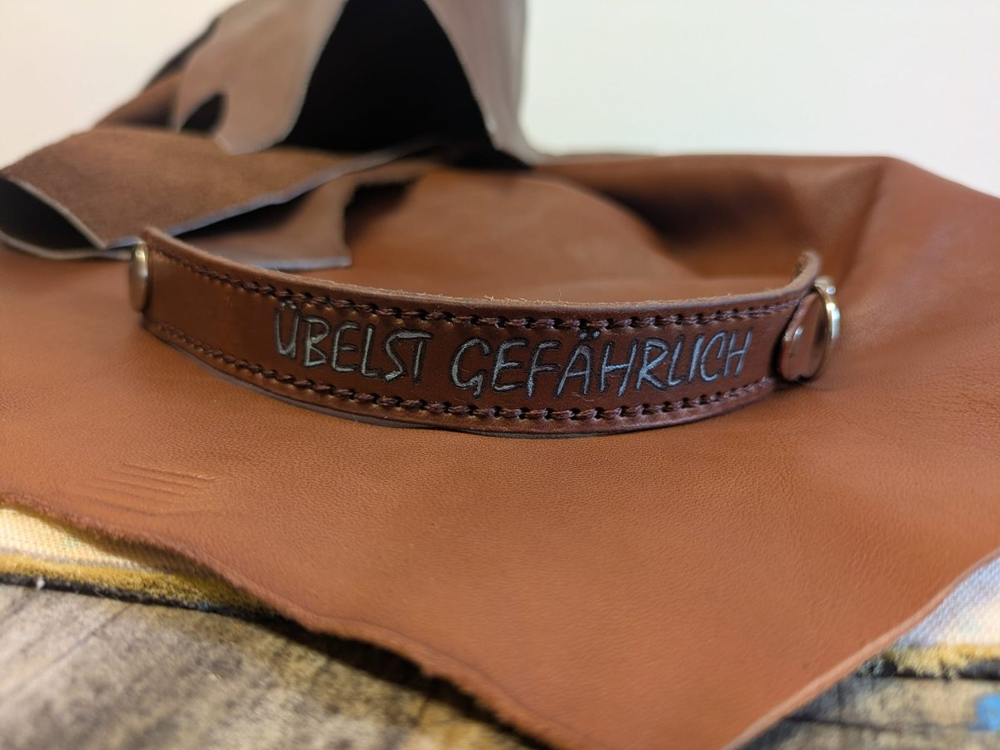
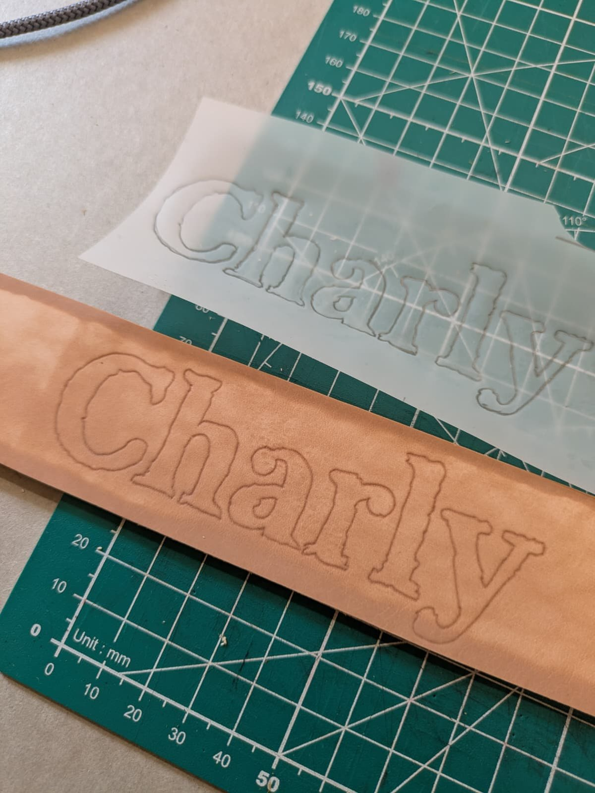
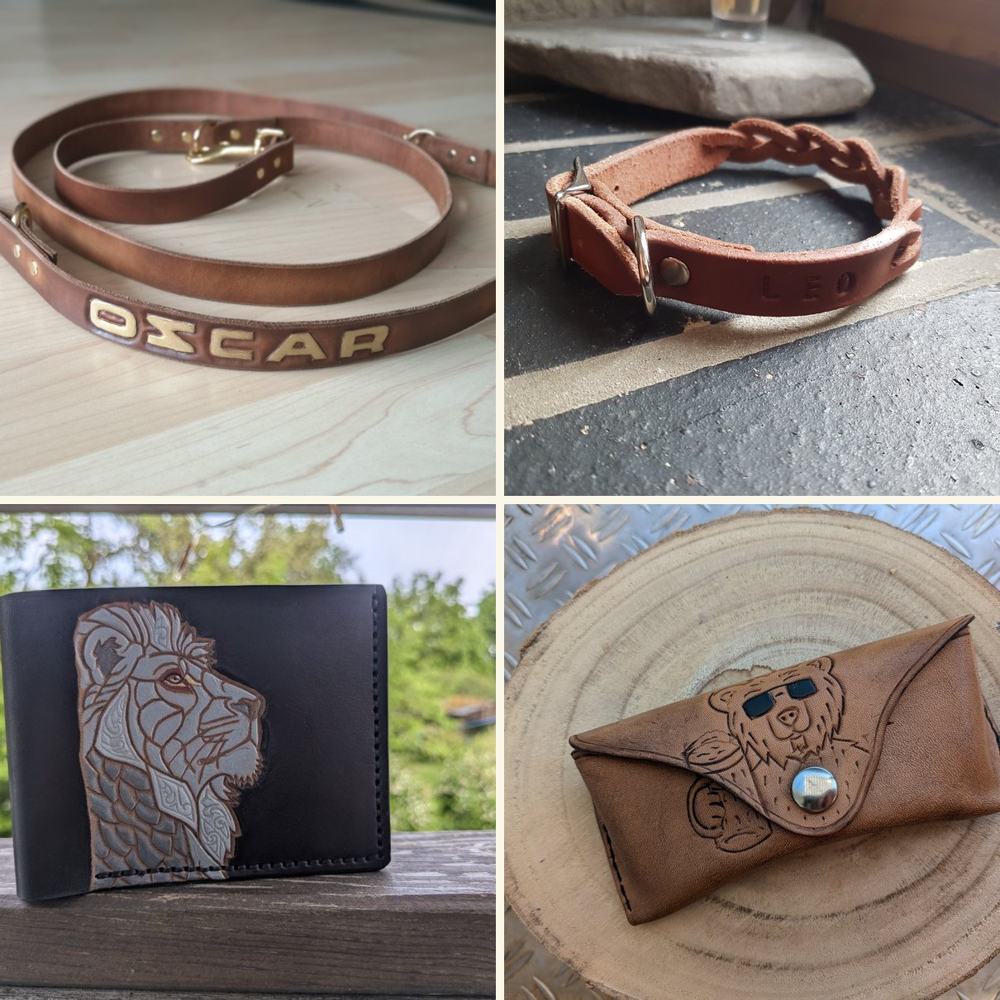

Handgemachte Hundehalsbänder aus echtem Leder – in eurer Wunschfarbe, mit dem Namen oder Spruch eures Vierbeiners. Jedes Stück ein Unikat, gefertigt in unserer Ledermanufaktur am Möningerberg bei Freystadt in der Oberpfalz.

Ein Halsband trägt euer Hund jeden Tag. Darum fertigen wir es nicht von der Stange, sondern genau nach euren Wünschen: ihr wählt die Lederfarbe, die Farbe der Ziernaht und den Namen oder Spruch, der darauf stehen soll. Wir arbeiten ihn sauber ein – je nach Stil eingraviert oder erhaben aufgesetzt.
Verarbeitet wird ausschließlich echtes, hochwertiges Leder, auf Wunsch weich gepolstert für mehr Tragekomfort, mit stabilen Beschlägen aus Edelstahl oder Messing. So entsteht ein Halsband, das nicht nur schön aussieht, sondern auch viele Jahre hält.
Jedes dieser Halsbänder ist für einen bestimmten Hund entstanden – vom kräftigen Spruch bis zum eleganten Namenszug.




Jedes Halsband entsteht bei uns in Handarbeit. Der Name wird zuerst in das Leder übertragen und ausgearbeitet, bevor gefärbt, gepolstert und vernäht wird. Diese Sorgfalt sieht man dem fertigen Stück an – und euer Hund spürt sie im Tragekomfort.
Weil wir selbst fertigen, sind wir flexibel: Sonderbreiten, besondere Farbkombinationen oder ein ganz eigener Spruch sind kein Problem. Sagt uns einfach, was euch vorschwebt.


Zum Halsband fertigen wir auf Wunsch die passende Leine mit Namensprägung – und darüber hinaus Lederwaren aller Art für Tier und Mensch. Auf Wunsch arbeiten wir auch ein Andenken an ein verstorbenes Tier dauerhaft und geschützt in ein Halsband oder einen Anhänger ein.
Ja. Jedes Halsband fertigen wir individuell: ihr wählt die Lederfarbe, die Farbe der Ziernaht und den Namen oder Spruch, den wir eingravieren oder erhaben einarbeiten.
Ihr messt den Halsumfang eures Hundes und gebt uns das Maß durch. Wir fertigen das Halsband passgenau nach Maß und beraten euch gern zur richtigen Breite und Polsterung.
Wir arbeiten mit echtem, hochwertigem Leder, auf Wunsch gepolstert für mehr Tragekomfort, mit stabilen Beschlägen aus Edelstahl oder Messing.
Ja. Auf Wunsch arbeiten wir ein kleines Andenken wie Fell, Haare oder Asche dauerhaft und geschützt in ein Halsband oder einen Anhänger ein. Sprecht uns einfach an, wir begleiten euch behutsam durch jeden Schritt.